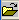

| Binner Reference |
|
Binner's main purpose is to resize FROG data into a form that the FROG algorithm (Frogger) can understand. This really involves only one simple step in the Binner program, but there are other steps that Binner performs to massage the data into better shape.
The basic functions of Binner are described in the following pages.
The first step is to load a raw FROG trace. This can be performed through either the File->Open menu or the open button,  on the toolbar.

|
The main panel has some areas of note. There is of course the ubiquitous menu and toolbar at the top of the panel. Next are the function buttons. These button switch between the various function of the Binner program. On the left of the main panel are a series of indicators and controls that change depending on function. In the center is the FROG trace display. This displays the current state of the FROG trace. On the right is the wavelength/frequency marginal and on the bottom is the delay marginal.
|
Calibration Panel
|